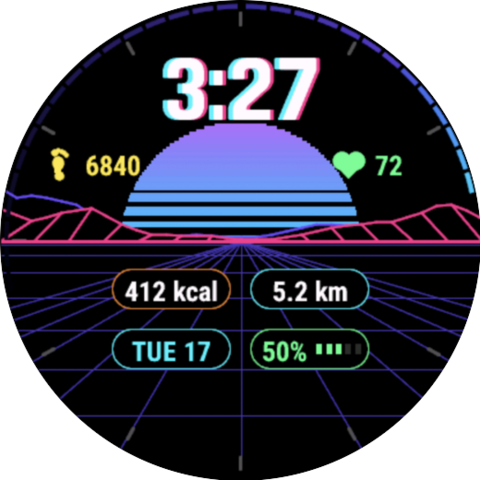

Software with a point of view.
We build software for phones, watches, desktops, the web and microcontrollers. Open source where we can, small, fast and carefully made.


Products
Dodai UI
A design system for Rust and the web: tokens, components and themes across gpui, iced, egui, Slint, Bevy and CSS.
SynthWave for Wear OS
A watch face in Watch Face Format with two looks, Flat and Mountains at dusk.


SynthWave for Garmin
The same watch face for Connect IQ, with an AMOLED-safe always-on mode.
SynthWave, up close


About
Dodai Tech is a small software studio. We design once and build natively for each platform, from Rust libraries to Wear OS and Garmin apps. No accounts, no ads, no tracking. Our code lives in the Dodai-Tech organization on GitHub.